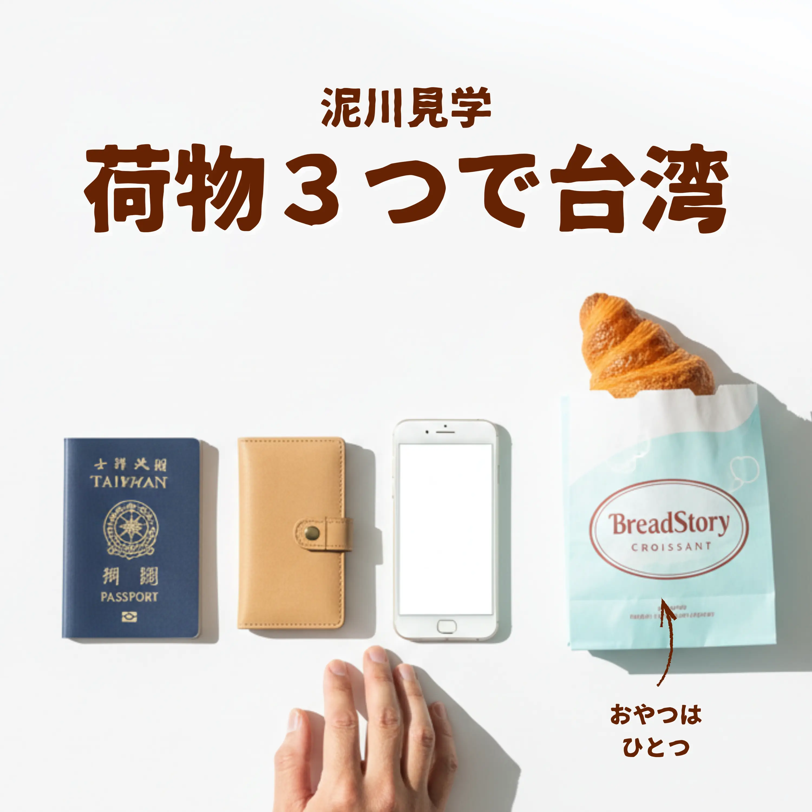
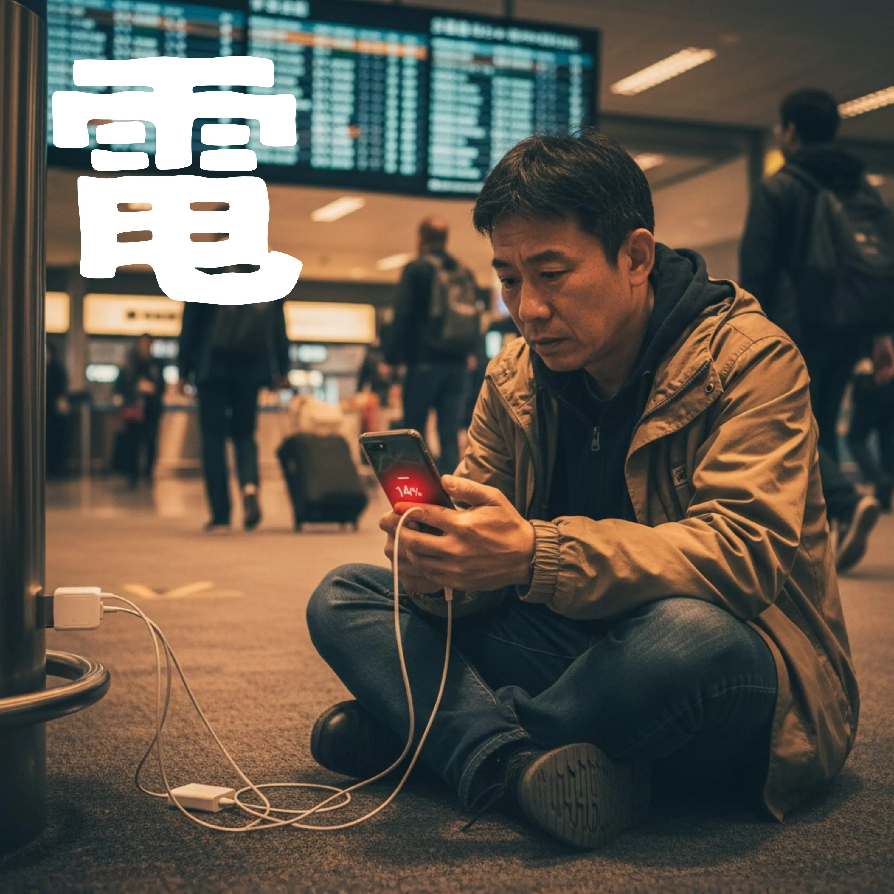
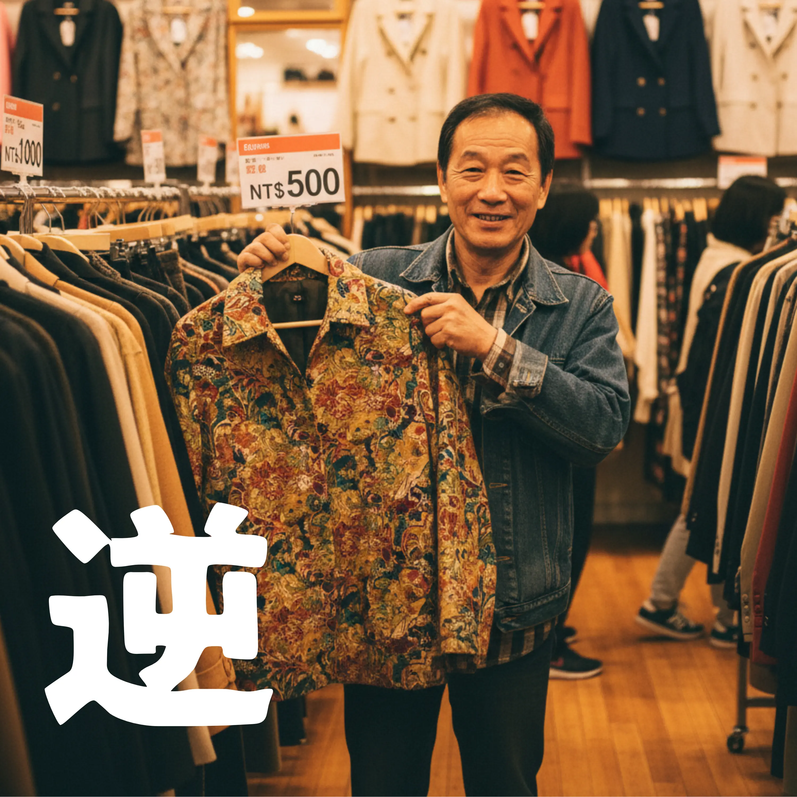
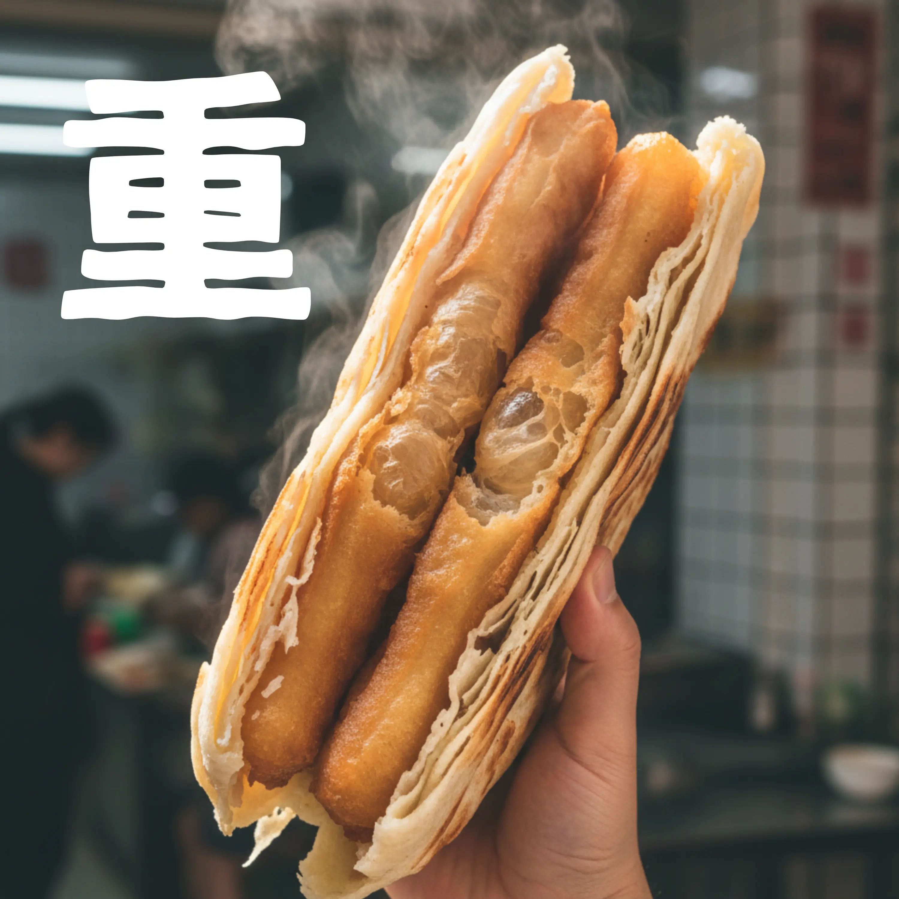
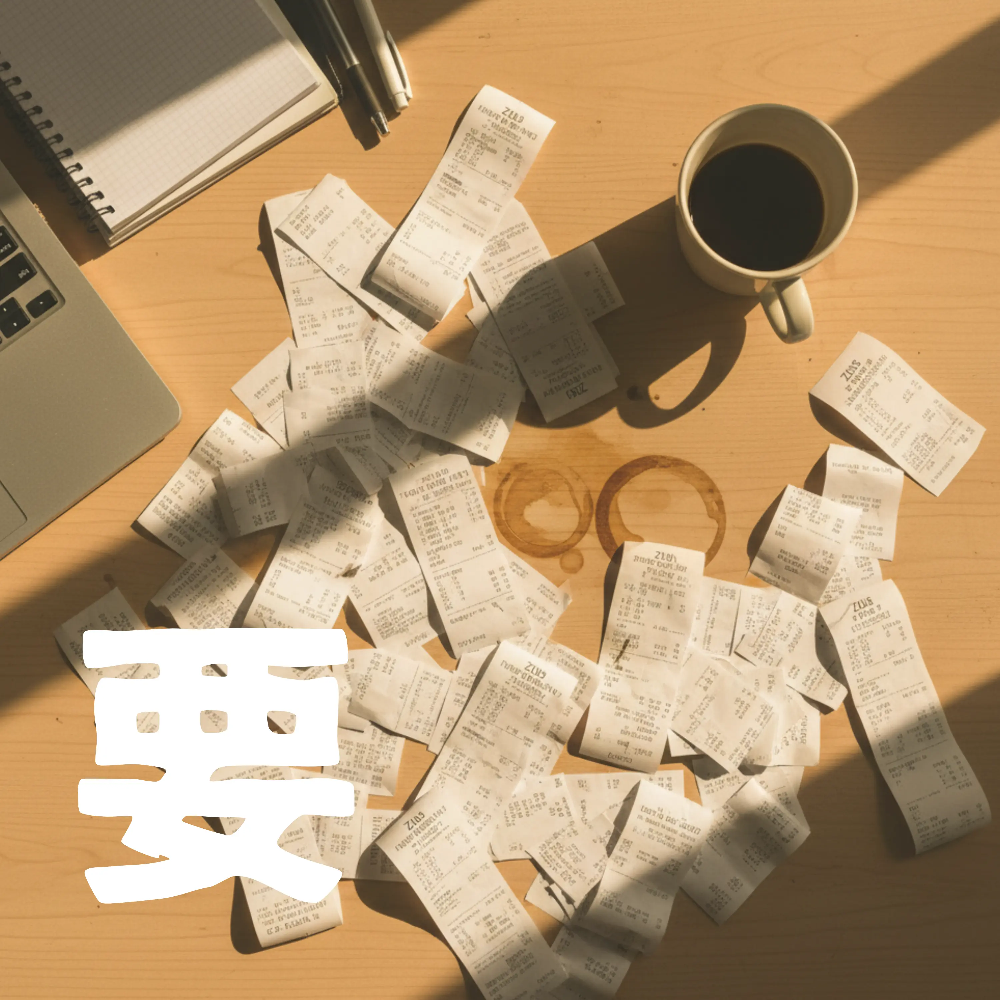
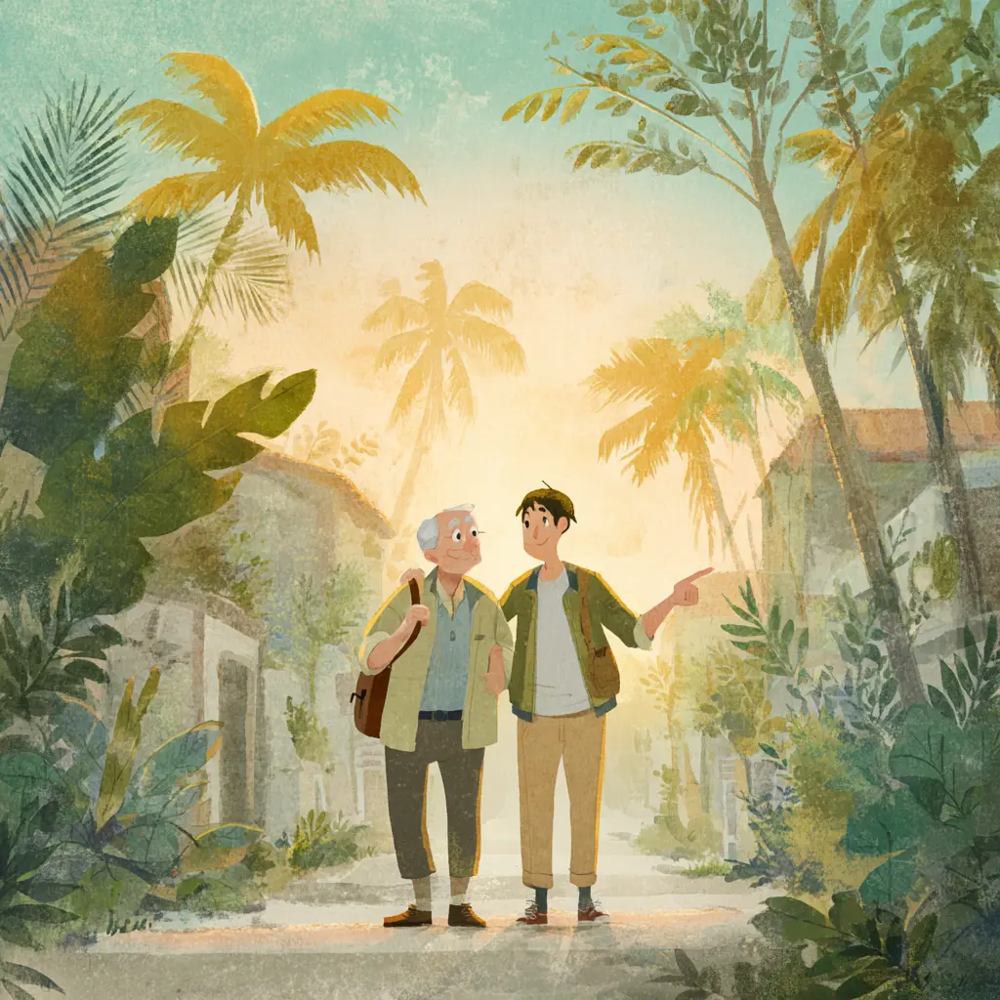

泥川の楽曲たち
45歳おっさんの台湾日記 — 全15曲

01Comedy Rock
荷物３つで台湾
身軽すぎて怪しまれるミニマル旅

02Electro Rock
充電14%のDeparture
バッテリーゼロは死を意味する旅
03Alt Rock
パクリのグルメ
他人の食欲パクって旅する醍醐味

04Comedy Rock
セカスト逆目利き
センスゼロが証明された逆目利き
05Ballad
歩きやすい歩道
当たり前が当たり前じゃない歩道
06Comedy Rock
醬爆豬扒飯団
フードファイター基準の朝ごはん
07Pop Rock
3つじゃ足りない
大切なものは数えきれないという真実
08Comedy Rock
台湾夜市の胃袋
次は胃袋二つ持ってくる宣言
09Acoustic Pop
バジルとチーズの午後
誰かの真似じゃない僕だけのレシピ
10Anime Rock
飲料袋-In-Ryao-Dai
夜市で両手が足りない戦いの物語

11Orchestral Rock
餅で餅を包む朝
炭水化物で炭水化物を包む朝の狂気
12Piano Ballad
じゃないお土産
おみやげは時間でできている

13Pop Rock
毎日そばに必要なもの
必要なものは毎日そばに置きたい
この曲の背景
スタバのロゴを持って歩くカッコよさはわかる。でも僕のサードプレイスはZus Coffee。高いか安いかじゃなく、必要かどうか。A Necessity, not a Luxury。
歌詞プレビュー
高いか安いかじゃない
必要か どうかだ
スタバは 確かにかっこいい
ロゴ持って歩く その気持ちわかる
でも僕のサードプレイスは 別にある

D1Emo Rock
今日の目覚めに39
9時間寝て爆走した45歳の朝
この曲の背景
目覚ましが鳴らず9時間26分爆睡。12時39分に目覚め「終わった」と思ったら、シフトは14時からだった。感謝の39（サンキュー）。
歌詞プレビュー
目覚ましは鳴らなかった
言い訳はもういらない
睡眠時間9時間26分
贅沢すぎた罪深い眠り
スマホの光が現実を突きつける

D2Folk Pop
親旅
何歳だって成長できる親の旅物語
この曲の背景
定年後の親が息子の暮らしを見に海外へ。英語もスマホもわからないけど、パスポートだけ握りしめて空港に立つ姿。台湾のセブンイレブンでnanacoカードを出そうとする場面も。
歌詞プレビュー
息子の暮らし 見てみたい
パスポートだけは 準備した
英語もスマホも わからない
それでも今日は 空港にいる